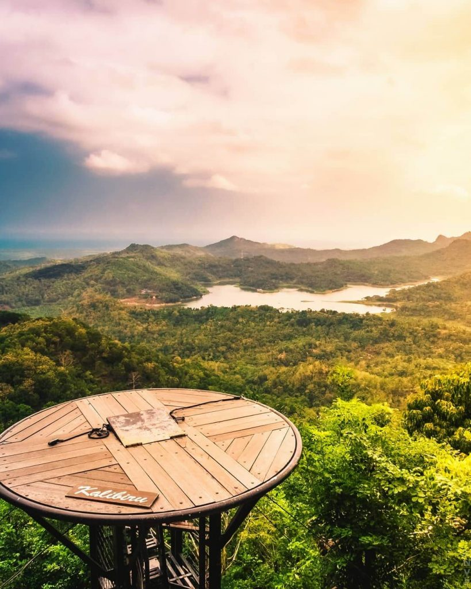
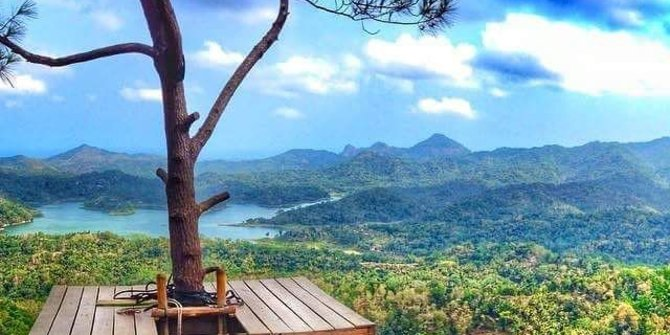
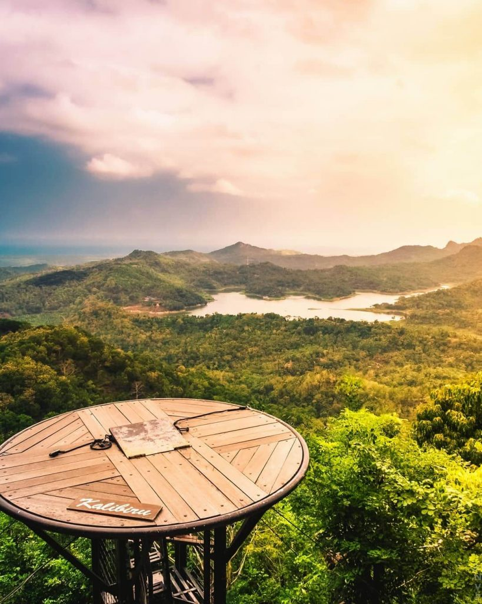
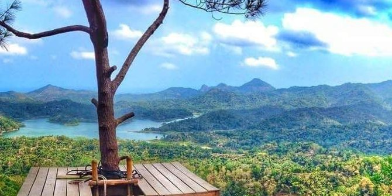

Yogyakarta Tour.
"5 good tourist attractions on the Yogyakarta"
.jpg)
.jpg)
"5 good tourist attractions on the Yogyakarta"
Let's travel on the Yogyakarta.
Ratu Boko Palace is a magnificent building that was built during the reign of Rakai Panangkaran, one of the descendants of the Syailendra dynasty. The palace, which was originally named Abhayagiri Vihara (meaning monastery on a peaceful hill) was founded as a place of solitude and focus on spiritual life. Being in this palace, you can feel peace and at the same time see the view of the city of Yogyakarta and Prambanan Temple with the backdrop of Mount Merapi.
The palace is located at 196 meters above sea level. The palace area of 250,000 m2 is divided into four, namely central, west, southeast, and east. The middle part consists of the main gate building, the field, the Burning Temple, a pond, pedestal stone, and the Paseban. Meanwhile, the southeastern part includes the Pendopo, Balais, 3 temples, a pond, and the Keputren complex. The cave complex, Buddhist stupa, and pond are located in the east. While the western part only consists of hills.
When you enter from the palace gate, you will go straight to the center. Two tall gates will welcome you. The first gate has 3 doors while the second gate has 5 doors. If you are careful, at the first gate you will find the words 'Panabwara'. The word, based on the Wanua Tengah III inscription, was written by Rakai Panabwara, (a descendant of Rakai Panangkaran) who took over the palace. The purpose of writing his name is to legitimize power, give 'strength' so that it is greater and gives a sign that the building is the main building.

Indonesia's next global tourist destination is Goa Pindul, which is located in Gunung Kidul, Yogyakarta.
For those of you who often go on vacation to Jogja, you must be familiar with Pindul Cave. Well, the cave is one of the tourist attractions in Jogja which is often visited by many visitors. In fact, it is already well-known and has become a tourism icon in Gunung Kidul.This Gunung Kidul Pindul Cave tour will offer activities that will require quite a bit of courage, namely cave tubung and also various views of very beautiful stalactites and stalagmites when you walk through the cave below. It will certainly be a very pleasant moment.
Pindul Cave Location
If you don't know where the place is, then the cave is located in the village of Title 1, Bejiharjo village, Karangmojo district, Gunung Kidul Regency, Yogyakarta. Besides that, the cave is also about 7 km and far from the city center of Wonosari which is the city of Gunung Kidul Regency and you can take approximately 2 hours if you start from Yogyakarta.
HeHa Sky View is a famous tourist spot in Yogyakarta and is visited by a lot of young people.
Most visitors who come to this place intend to hunt for photos in various interesting spots such as
the Sky Bridge, Sky Plane, Sky Glass, Wall Climbing, Sky Ballon, Suparman, and Sky Love.
This tourist spot in Gunung Kidul is known to be open from 10.00 WIB to 21.00 WIB from Monday to
Friday.
Then on Saturday and Sunday, it starts operating at 08.00 WIB to 21.00 WIB.
The ticket price offered is also affordable, at around Rp. 15,000 to 20,000 per person.

Kedung Pedut. Kedung Pedut is one of the natural attractions that has recently been loved by many visitors, especially young people. Even foreign tourists have visited many tourist attractions which were opened since February 2015. The location of Kedung Pedut is located in Jatimulyo Village, Girimulyo District, Kulon Progo Regency. This waterfall is included in the Jatimulyo Tourism Village. In Javanese, Kedung means pond and Pedut means fog. This is because it was so swift when the water fell down into the pool, causing the surrounding pool to become foggy. Another uniqueness of this tourist attraction is the color of the water which is clear and changes color to Tosca. From the parking location, we have to walk about 500m to get to the location of the waterfall, through a coorblocked path. All the way to Kedung Pedut is very shady and the cleanliness around the location is well maintained. We are also treated to the flow of the river and several photo spots that can be used to take pictures. Not only that, there are several other additional games that can be used, such as flying fox. Kedung Pedut Waterfall is close to Kembang Soka Waterfall and Mudal River Ecotourism. The best route to Kedung Pedut can be taken approximately 50 km to the west from the city of Yogyakarta. The path that can be used is through the Godean Road to the west.
See photos in galeryThere are indeed many pine forest tours in Yogyakarta, and one of them that must be visited is Pinus
Pengger.
Pinus Pengger has many photo spots with beautiful city lights as the background, and the most famous
is the spot made from the arrangement of tree branches in various shapes, including round, love,
triangle, and others.
Besides being able to take pictures with an urban background, there are other facilities that you
can try, such as flying fox, camping ground, forest bikes, and exploring nature.

.jpg)
.jpg)

 



What People Say?
Made With By PutraAdji
.JPG)
.jpg)